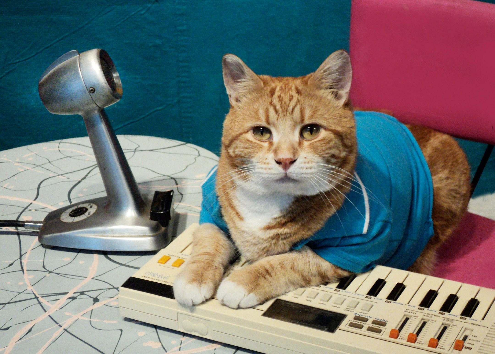

Another internet meme worth mentioning is Keyboard Cat.
A video was posted to YouTube in June 2007, titled "Charlie Schmidt's 'cool cat'". It was filmed in 1984, and depicted a female cat named Fatso. She wore a blue shirt and appeared to “play” a melody on an electronic keyboard.
Here's the original Keyboard Cat melody from this YouTube video!
A video called "Play him off, Keyboard Cat", which combined a man falling down an escalator and Keyboard Cat’s song, was uploaded on February 2nd, 2009. Many other mashups were created, overlaying Fatso with different kinds of footage. Fatso, sadly, died in 1987 and became famous only decades after her death.
In 2009, Charlie Schmidt became the owner of a second cat, Bento. He continued on to make videos of synthesizer-playing Bento, as a tribute to Fatso. The second “reincarnation” soon gave way to the third, with much grievance from the World Wide Web, and “Skinny” became the most recent Keyboard Cat.
Return to the top of the page.